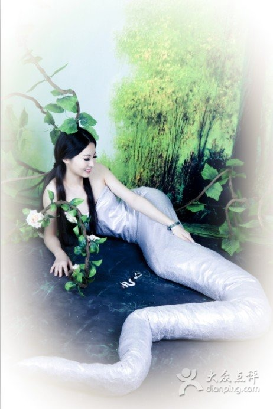

白蛇传

“白蛇传”是中国古代“四大民间传说”之一。《白蛇传》乃是起源于一千多年前的北宋时期，发源地在河南汤阴(今河南鹤壁市)黑山之麓、淇河之滨的许家沟村。 许家沟所依的黑山，又名金山、墨山、大(亻加呸右)山，古为冀州之地，是太行山的余脉之一。这里峰峦迭嶂，淇水环流，林木茂盛，鸟语花香，环境清幽，亚赛桃源。早在魏、晋时期，左思就在《魏都赋》里记载了“连眉配犊子”的爱情故事传说：“犊子牵黄牛，游息黑山中，时老时少，时好时丑。后与连眉女结合，俱去，人莫能追……”后来这一典故衍化为“白蛇闹许仙”故事，故事的女主人公也由“连眉女”衍变为白蛇。 “白蛇闹许仙”里的白蛇精，当年曾被许家沟村一位许姓老人从一只黑鹰口中救出性命。这条白蛇为报答许家的救命之恩，嫁给了许家后人牧童许仙。婚后，她经常用草药为村民治病，使得附近“金山寺”的香火变得冷落起来，也使黑鹰转世的“金山寺”长老“法海和尚”大为恼火，决心破坏许仙的婚姻，置“白娘子”于死地。于是引出了人们熟悉的“盗仙草”、“水漫金山寺”等情节。白娘子因为水漫金山而触动胎气，早产生下儿子许仕麟。法海趁机用“金钵”罩住分娩不久的白娘子，将其镇压于南山“雷峰塔”下。通过此事，许仙心灰意冷，便在“雷峰塔”下出家修行，护塔侍子。18年后，许仕麟高中状元，回乡祭祖拜塔，才救出母亲，一家团圆。